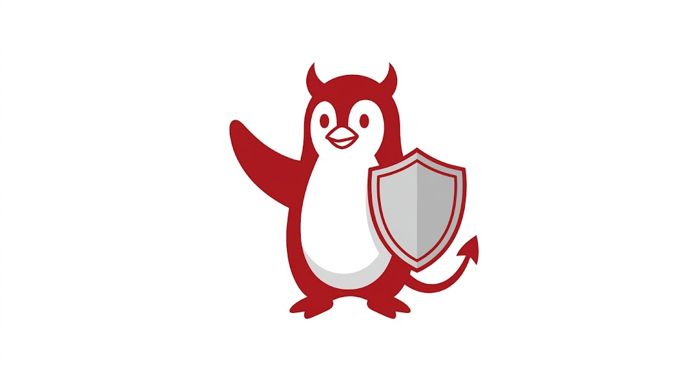
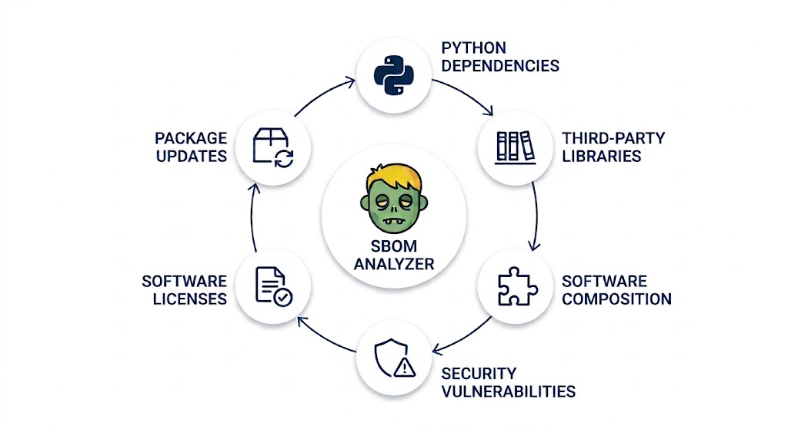
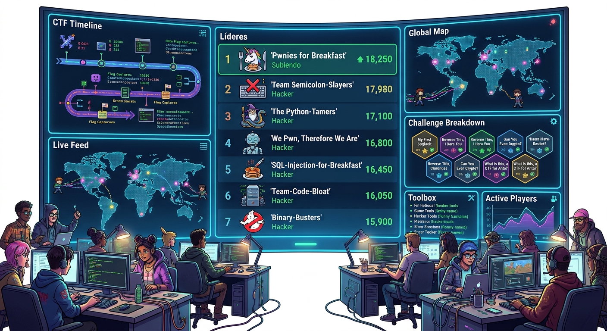

Featured

H2Guard - A Linux NFQUEUE Daemon
A lightweight daemon for handling NFQUEUE rules in a Linux server against HTTP2 attacks like RapidReset.
View Code
Cybersecurity Enthusiast.
02 / skills
Technologies and tools I've worked with.
03 / my work
Technical builds and in-depth research — a mix of tooling, CTF-driven builds and security research.

A lightweight daemon for handling NFQUEUE rules in a Linux server against HTTP2 attacks like RapidReset.
View Code
A Software-in-the-Loop (SITL) simulation of a CAN Bus Intrusion Detection System. It uses clock skew fingerprinting to detect masquerade attacks.
View Code
A tool for analyzing Software Bill of Materials (SBOM) to identify potential security vulnerabilities and zombie packages.
View Code
Co elaborated CTF challenge for beginners hosted on TryHackMe.
View Challenge04 / writeups
Some times I pretend I'm a writer because I like to share what I've learned.
05 / beyond cyber
Away from the keyboard I'm usually interested in these other topics:
2 out of 5 continents for now....
Press F in the chat for COD good old times
On repeat right now:
Recommend me another shonen